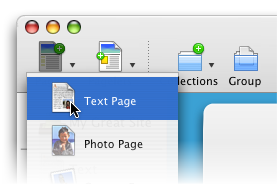
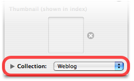

Blogging with Sandvox
Introduction
Blogging with Sandvox is very simple. In addition to creating a written blog, you can use this feature to add a podcast or videocast to your site. However, it may not be entirely obvious how to get started with a blog. This article serves as a guide to creating and maintaining a blog with Sandvox.
Creating the Blog
When you think about it, a blog is simply a collection of webpages, ordered by date. Therefore, that is exactly what we shall create, a collection of pages, mainly Text.
To create a new blog:
- Select the Home Page in the Site Outline.
-
Click the "Collections" item in the toolbar and choose "Weblog."
- Open the Page Inspector and give the blog a suitable name by setting the "Page Title."
Congratulations, you now have a new blog! You should end up with something in the Site Outline like this:
You will probably also want the blog to appear in the Site Menu. If it's not already there:
To add the Blog to the Site Menu:
- Select the blog in the Site Outline.
- Open the Page Inspector.
- Check the "Include in site menu."
Adding Content to the Blog
Now your blog is all set up, it's time to add some content to it!
To add a new entry to the blog:
- Select the blog in the Site Outline.
-
Click the "Pages" item in the toolbar and select "Text Page."

You can now begin writing in this page to create your very first blog entry. Don't forget that you can easily add Embedded Images or Callouts to the page's content.
Publishing the Blog
If you have already set up your site for publishing then all you need do is click the "Publish" item in the toolbar.
If not, you will have to set up your Host as described in "Setting Up Your Host." Then click the "Publish" toolbar item.
RSS Feed
Of course, half the point of a blog is that people can subscribe to it. This is done through an RSS feed. Sandvox automatically creates and maintains a blog's RSS feed.
You want visitors to find the RSS feed for your blog easily. If the blog was created using version 1.2 of Sandvox or later, then an RSS Badge will automatically have been created at the same time. Visitors can click on the badge to view the RSS feed. You can also attach an RSS Badge to an existing blog.
To add an RSS Badge to a blog:
- Select the blog in the Site Outline.
- Click the "Pagelets" item in the toolbar and select "RSS Badge."
- Open the Selection Inspector and customize the new RSS Badge as you like.
Archives
Once you blog grows to more than a few entries, it is often useful to have a full archive available. Sandvox easily creates a month-by-month archive using the Collection Archive pagelet.
To set up a blog archive:
- Select your blog in the Site Outline.
- Click the "Pagelets" item in the toolbar and choose "Collection Archive."
- Select the newly created archive pagelet and open the Selection Inspector. Ensure that it is connected to your blog page.
- Publish the site.
Further Ideas
Of course, you don't have to leave it at that with your blog. Here's some ideas for further things to do.
Experiment with Content
Normally when adding to your blog, you use simple Text pages, but don't stop there! If you are making a post about a photo or a movie you've created, why not use a Photo or Video page instead?
Don't forget that you can also easily create such pages by dragging a photo or movie (from the Media Browser or another application such as the Finder) into the Site Outline. Once you've created the page, click the green Editing Marker  to add some text to it.
to add some text to it.
If you're feeling really adventurous, (and you have Sandvox Pro), you could even experiment with a Raw HTML blog post!
Blog Centered Sites
Of course, you may not want the blog to simply be a part of your site, but actually the center of it. Sandvox makes it easy to do this, since the Home Page itself is actually a Collection.
To turn your Home Page into a blog:
- Select the Home Page in the Site Outline.
- Open the Page Inspector.
-
From the "Collection: popup, select "Weblog."

Now, when you want to add a post to your blog, simply add it to the Home Page itself rather than a separate dedicated Collection.
Comments
Why not enable comments on your blog? Comments allow your readers to leave behind their thoughts on items you post.
When you first create the blog, Sandvox automatically prepares it for comments. All you have to do is select one of our comment providers (or, for legacy documents, enter your Haloscan ID) in the Site Properties as described in the "Comments" article.
Better Summaries
When you first create a blog, the main blog page is set to show the twenty most recent articles, along with a full summary of their content. If you tend to write quite long blog entries, you may find that this results in too much content on the page.
One way to save space is to simply reduce the number of recent articles displayed:
To set the number of recent blog items displayed:
- Select the blog in the Site Outline and open the Page Inspector.
- If necessary, click the triangle at the bottom of the Inspector to disclose the full collection settings.
-
Set the "Items" box to a more appropriate number.

An alternative is to truncate the summary text of each article so that it takes up less space. If you wish, you can even make use of custom summaries. This allows you to completely separate the summary text of an article from the actual text of its corresponding page.
For more information on custom summaries and summaries in general, please see the "Summary" article.
Dates
When you first create a Blog, it is set to automatically display the date on each page. What you may not know though, is that you can change whether the creation or modification date of the page is displayed. You can also change the format the date is displayed in.
For information on how to set this, please see the "Dates & Times" section of the "Site Inspector" article.
Blog Maintenance
Sandvox maintains its blog entirely from the site document, so it's not possible to update your blog remotely unless you have your Mac and your Sandvox document with you. Moreover, Sandvox does not integrate with other blogging tools such as WordPress or Blogger; they maintain their own database on their servers, and are not Mac-based.